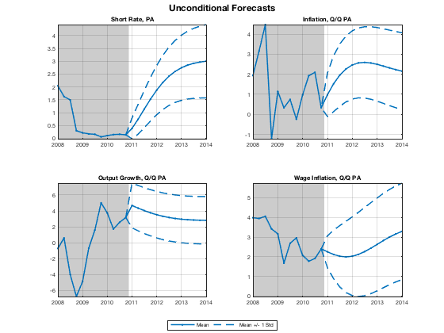
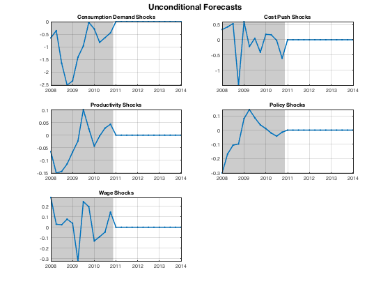
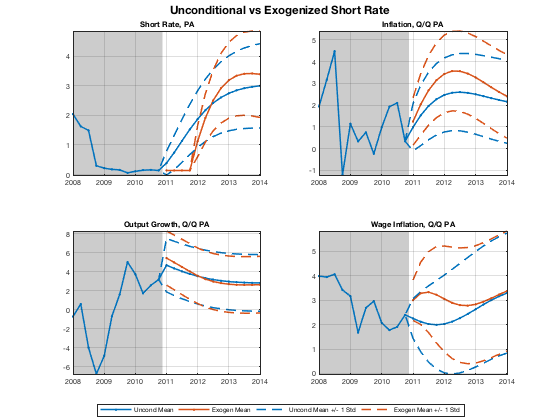
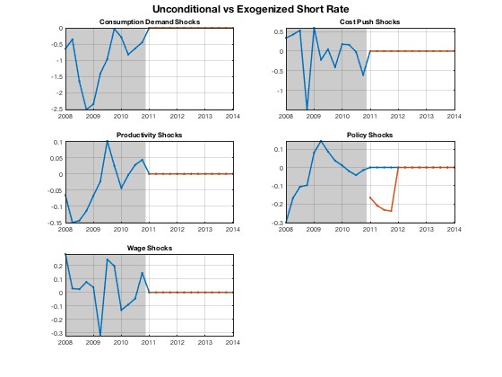
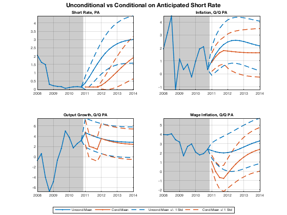
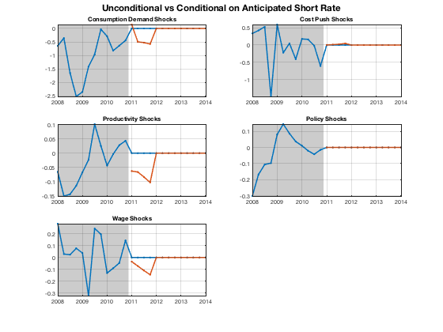
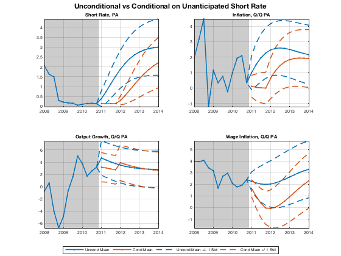
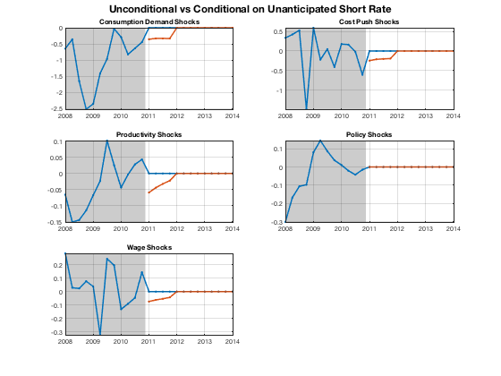
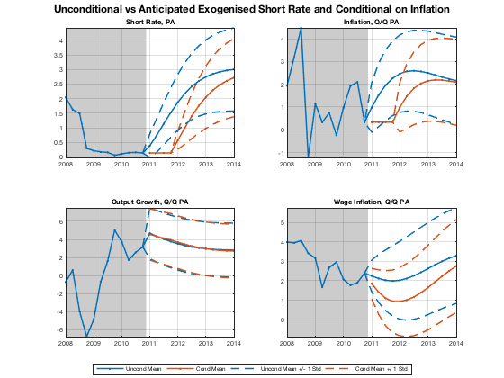
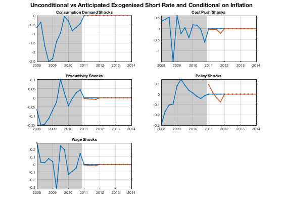

Forecasts with Judgmental Adjustments
Use the Kalman filtered data as the starting point for forecasts, both unconditional and conditional, i.e. with various types of judgmental adjustments.
Contents
- Dependencies
- Clear Workspace
- Load Estimated Model Object, Filtered Data, and Historical Database
- Define Dates
- Define Graphics Styles
- Run Unconditional Forecast
- Create Plot Lists
- Report Unconditional Forecast
- Exogenise Interest Rates
- Compare Exogenised Forecasts with Unconditional Forecasts
- Condition on Anticipated Interest Rates
- Compare Anticipated Conditional Forecasts with Unconditional Forecasts
- Condition on Unanticipated Interest Rates
- Compare Unanticipated Conditional Forecasts with Uncondtional Forecasts
- Exogenised Interest Rates and Condition on Inflation
- Verify Exogenised and Conditioned Data Points
- Compare Exogenised/Conditional Forecasts with Unconditional Forecasts
- Resimulate Point Forecasts
- Show Variables and Objects Created in This File
Dependencies
Run the following m-files before this one:
Clear Workspace
Clear workspace, close all graphics figures, clear command window, and check the IRIS version.
clear close all clc irisrequired 20180131
Load Estimated Model Object, Filtered Data, and Historical Database
Load the model object estimated in estimate_params, the filtered (smoothed) data from a Kalman filter in filter_hist_data, and the historical database created in read_data.
load mat/estimate_params.mat mest load mat/filter_hist_data.mat f load mat/read_data.mat d startHist endHist
Define Dates
startFcst = endHist + 1; endFcst = startFcst + 3*4; startPlot = startFcst - 12; plotRng = startPlot:endFcst; highRng = startPlot:endHist;
Define Graphics Styles
The structs sty1 and sty2 are used in the option Style= in dbplot( ) to automatically style the graphs plotted.
sty1 = struct( );
sty1.Line.Color = @first;
sty1.Line.LineStyle = {'-', '--', '--'};
sty1.Line.LineWidth = 1.5;
sty1.Line.Marker = {'.', 'none', 'none'};
sty1.Axes.FontSize = 7;
sty1.Legend.FontSize = 7;
sty2 = sty1;
sty2.Line.color = repmat( {@first, @second}, 1, 3);
sty2.Line.LineStyle = {'-', '-', '--', '--', '--', '--'};
sty2.Line.LineWidth = 1.5;
sty2.Line.Marker = {'.', '.', 'none', 'none', 'none', 'none'};
sty2.Axes.FontSize = 7;
sty2.Legend.FontSize = 7;
Run Unconditional Forecast
Unconditional forecast runs from the initial condition supplied in the input database, f. The initial conditions consist of the mean and the root mean square error (initial uncertainty) for each variable. Directly observed variables have obviously RMSE zero, the unobservables (such as productivity) have non-zero initial uncertainty.
u = jforecast(mest, f, startFcst:endFcst);
u %#ok<NOPTS>
u.mean
u.mean = dboverlay(f.mean, u.mean);
u.std = dboverlay(f.std, u.std);
u =
struct with fields:
mean: [1x1 struct]
std: [1x1 struct]
ans =
struct with fields:
Short: [13x1 Series]
Infl: [13x1 Series]
Growth: [13x1 Series]
Wage: [13x1 Series]
Y: [15x1 Series]
N: [13x1 Series]
W: [15x1 Series]
Q: [13x1 Series]
H: [13x1 Series]
A: [14x1 Series]
dA: [14x1 Series]
P: [17x1 Series]
R: [14x1 Series]
Pk: [13x1 Series]
Rk: [13x1 Series]
Lambda: [13x1 Series]
dP: [14x1 Series]
d4P: [13x1 Series]
dW: [14x1 Series]
RMC: [13x1 Series]
Mp: [13x1 Series]
Mw: [13x1 Series]
Ey: [13x1 Series]
Ep: [13x1 Series]
Ea: [13x1 Series]
Er: [13x1 Series]
Ew: [13x1 Series]
alpha: 1.0074
beta: 0.9962
gamma: 0.6000
delta: 0.0300
k: 10
pi: 1.0062
eta: 6
psi: 0.2500
chi: 0.9138
xiw: 133.8286
xip: 264.6679
rhoa: 0.9000
rhor: 0.8587
kappap: 2.9457
kappan: 0.3419
Short_: -3.9012
Infl_: -0.3539
Growth_: 0.0078
Wage_: -1.9244
ttrend: [13x1 Series]
std_Mp: 0
std_Mw: 0
std_Ey: 0.0079
std_Ep: 0.0032
std_Ea: 0.0011
std_Er: 9.2918e-04
std_Ew: 0.0019
corr_Ep__Er: -0.1107
Create Plot Lists
Define variables and titles to appear in graphs created by dbplot( ) functions after each forecast experiment.
plotList1 = { ...
' "Short Rate, PA" [mean.Short, mean.Short+std.Short, mean.Short-std.Short]', ...
' "Inflation, Q/Q PA" [mean.Infl, mean.Infl+std.Infl, mean.Infl-std.Infl]', ...
' "Output Growth, Q/Q PA" [mean.Growth, mean.Growth+std.Growth, mean.Growth-std.Growth]', ...
' "Wage Inflation, Q/Q PA" [mean.Wage, mean.Wage+std.Wage, mean.Wage-std.Wage]', ...
};
plotList2 = { ...
' "Consumption Demand Shocks" mean.Ey', ...
' "Cost Push Shocks" mean.Ep', ...
' "Productivity Shocks" mean.Ea', ...
' "Policy Shocks" mean.Er', ...
' "Wage Shocks" mean.Ew', ...
};
Report Unconditional Forecast
dbplot(u, startPlot:endFcst, plotList1, ... 'Tight=', true, 'Style=', sty1, 'Highlight=', highRng); grfun.ftitle('Unconditional Forecasts'); grfun.bottomlegend('Mean', 'Mean +/- 1 Std'); dbplot(u, startPlot:endFcst, plotList2, ... 'Tight=', true, 'Style=', sty1, 'Highlight=', highRng, ... 'Transform=', @(x) 100*x); grfun.ftitle('Unconditional Forecasts'); 
Exogenise Interest Rates
In this judgmentally adjusted forecast, swap the endogeneity and exogeneity of the short rates and the policy shocks. In other words, the short rates are kept fixed at a specified level (here, it is the last observed value), and the policy shocks become a new "endogenous variable" that adjust exactly so to make the policy rule consistent with the fixed interest rates.
The forecast with exogenised interest rates is run in an anticipated mode.
sc1 = plan(mest, startFcst:endFcst); sc1 = exogenize(sc1, 'Short', startFcst:startFcst+3); sc1 = endogenize(sc1, 'Er', startFcst:startFcst+3); f1 = f; f1.mean.Short(startFcst:startFcst+3, 1) = f.mean.Short(endHist); detail(sc1, f1); j1 = jforecast(mest, f1, startFcst:endFcst, 'Plan=', sc1);
Exogenized: [4] Short *2011Q1[=0.136667] *2011Q2[=0.136667] *2011Q3[=0.136667] *2011Q4[=0.136667] Endogenized real: [4] Er *2011Q1[@1] *2011Q2[@1] *2011Q3[@1] *2011Q4[@1] Endogenized imag: [0] - Conditioned upon: [0] -
Compare Exogenised Forecasts with Unconditional Forecasts
dbplot(u & j1, startPlot:endFcst, plotList1, ... 'Tight=', true, 'Style=', sty2, 'Highlight=', highRng); grfun.ftitle('Unconditional vs Exogenized Short Rate'); grfun.bottomlegend('Uncond Mean', 'Exogen Mean', ... 'Uncond Mean +/- 1 Std', 'Exogen Mean +/- 1 Std'); dbplot(u & j1, startPlot:endFcst, plotList2, ... 'Tight=', true, 'Style=', sty2, 'Highlight=', highRng, ... 'Transform=', @(x) 100*x); grfun.ftitle('Unconditional vs Exogenized Short Rate'); 
Condition on Anticipated Interest Rates
In this exercise, keep the interest rates fixed, but use a very different mechanism to do that. Compute the most likely combination of all possible shocks, except the monetary policy shocks, and changes in the initial conditions to reproduce a given path for the interest rates (it is again a flat track). The forecast is produced in an anticipated mode, which means that all agents know the future shocks from the very beginning.
mest1 = mest; mest1.std_Er = 0; get(mest, 'Std') & get(mest1, 'Std') %#ok<NOPTS> sc2 = plan(mest1, startFcst:endFcst); sc2 = condition(sc2, 'Short', startFcst:startFcst+3); f2 = f; f2.mean.Short(startFcst:startFcst+3) = f2.mean.Short(endHist); c = struct( ); c.Short = f2.mean.Short; detail(sc2, f2); j2 = jforecast(mest1, f2, startFcst:endFcst, c, 'Plan=', sc2);
ans =
struct with fields:
std_Mp: [0 0]
std_Mw: [0 0]
std_Ey: [0.0079 0.0079]
std_Ep: [0.0032 0.0032]
std_Ea: [0.0011 0.0011]
std_Er: [9.2918e-04 0]
std_Ew: [0.0019 0.0019]
Exogenized: [0]
-
Endogenized real: [0]
-
Endogenized imag: [0]
-
Conditioned upon: [4]
Short *2011Q1[=0.136667] *2011Q2[=0.136667] *2011Q3[=0.136667] *2011Q4[=0.136667]
Compare Anticipated Conditional Forecasts with Unconditional Forecasts
dbplot(u & j2, startPlot:endFcst, plotList1, ... 'Tight=', true, 'Style=', sty2, 'Highlight=', highRng); grfun.ftitle('Unconditional vs Conditional on Anticipated Short Rate'); grfun.bottomlegend('Uncond Mean', 'Cond Mean', ... 'Uncond Mean +/- 1 Std', 'Cond Mean +/ 1 Std'); dbplot(u & j2, startPlot:endFcst, plotList2, ... 'Tight=', true, 'Style=', sty2, 'Highlight=', highRng, ... 'Transform=', @(x) 100*x); grfun.ftitle('Unconditional vs Conditional on Anticipated Short Rate'); 
Condition on Unanticipated Interest Rates
Do the same as above, but with the conditioning interest rate unanticipated.
sc3 = sc2; f3 = f2; j3 = jforecast(mest1, f3, startFcst:endFcst+50, ... 'Plan=', sc3, 'anticipate=', false);
Compare Unanticipated Conditional Forecasts with Uncondtional Forecasts
dbplot(u & j3, startPlot:endFcst, plotList1, ... 'Tight=', true, 'Style=', sty2, 'Highlight=', highRng); grfun.ftitle('Unconditional vs Conditional on Unanticipated Short Rate'); grfun.bottomlegend('Uncond Mean', 'Cond Mean', ... 'Uncond Mean +/- 1 Std', 'Cond Mean +/ 1 Std'); dbplot(u & j3, startPlot:endFcst, plotList2, ... 'Tight=', true, 'Style=', sty2, 'Highlight=', highRng, ... 'Transform=', @(x) 100*x); grfun.ftitle('Unconditional vs Conditional on Unanticipated Short Rate'); 
Exogenised Interest Rates and Condition on Inflation
Combine two techniques together: exogenizing and conditioning.
sc4 = plan(mest, startFcst:endFcst); sc4 = exogenise(sc4, 'Short', startFcst:startFcst+3); sc4 = endogenise(sc4, 'Er', startFcst:startFcst+3); sc4 = condition(sc4, 'Infl', startFcst:startFcst+3); f4 = f; f4.mean.Short(startFcst:startFcst+3) = f4.mean.Short(endHist); f4.mean.Infl(startFcst:startFcst+3) = f4.mean.Infl(endHist); j4 = jforecast(mest1, f4, startFcst:endFcst+50, 'Plan=', sc4);
Verify Exogenised and Conditioned Data Points
Print the forecasts for the interest rate and inflation, and compare the forecasts with the values we supplied in the input database.
disp('Interest rate forecast and tunes'); [j4.mean.Short{startFcst:startFcst+3}, ... f4.mean.Short{startFcst:startFcst+3}] %#ok<NOPTS> disp('Inflation forecast and conditions'); [j4.mean.Infl{startFcst:startFcst+3}, ... f4.mean.Infl{startFcst:startFcst+3}] %#ok<NOPTS>
Interest rate forecast and tunes
ans =
Series object: 4-by-2
2011Q1: 0.13667 0.13667
2011Q2: 0.13667 0.13667
2011Q3: 0.13667 0.13667
2011Q4: 0.13667 0.13667
'Short Term Rate' 'Short Term Rate'
user data: empty
Inflation forecast and conditions
ans =
Series object: 4-by-2
2011Q1: 0.33538 0.33538
2011Q2: 0.33538 0.33538
2011Q3: 0.33538 0.33538
2011Q4: 0.33538 0.33538
'Price Inflation' 'Price Inflation'
user data: empty
Compare Exogenised/Conditional Forecasts with Unconditional Forecasts
dbplot(u & j4, startPlot:endFcst, plotList1, ... 'Tight=', true, 'Style=', sty2, 'Highlight=', highRng); grfun.ftitle(['Unconditional vs ', ... 'Anticipated Exogenised Short Rate and Conditional on Inflation']); grfun.bottomlegend('Uncond Mean', 'Cond Mean', ... 'Uncond Mean +/- 1 Std', 'Cond Mean +/ 1 Std'); dbplot(u & j4, startPlot:endFcst, plotList2, ... 'Tight=', true, 'Style=', sty2, 'Highlight=', highRng, ... 'Transform=', @(x) 100*x); grfun.ftitle(['Unconditional vs ', ... 'Anticipated Exogenised Short Rate and Conditional on Inflation']); 
Resimulate Point Forecasts
The function simulate( ) only uses the input database for initial condition and in-sample shocks. The shocks backed out by jforecast( ) are such that they exactly reproduce the exogenised and/or conditioned data points. The function maxabs( ) reports the max abs differences between the fields of the same name in two structs (databases).
s1 = simulate(mest1, j1.mean, startFcst:endFcst); s2 = simulate(mest1, j2.mean, startFcst:endFcst); s3 = simulate(mest1, j3.mean, startFcst:endFcst, 'anticipate=', false); s4 = simulate(mest1, j4.mean, startFcst:endFcst); maxabs(s1, j1.mean) ... & maxabs(s2, j2.mean) ... & maxabs(s3, j3.mean) ... & maxabs(s4, j4.mean) %#ok<NOPTS>
ans =
struct with fields:
Short: [3.4639e-14 3.3751e-14 4.2633e-14 6.1284e-14]
Infl: [2.2204e-14 2.3093e-14 4.6241e-14 6.2172e-14]
Growth: [7.9936e-15 3.0198e-14 2.7534e-14 3.0198e-14]
Wage: [4.3521e-14 5.9952e-14 1.0214e-13 9.5923e-14]
Y: [1.3323e-15 2.2204e-15 6.6613e-16 6.6613e-16]
N: [2.2204e-16 1.1102e-16 2.2204e-16 2.2204e-16]
W: [1.7764e-15 4.4409e-15 5.3291e-15 5.3291e-15]
Q: [8.8818e-16 6.6613e-16 1.5543e-15 1.1102e-15]
H: [1.7764e-15 1.9984e-15 8.8818e-16 8.8818e-16]
A: [8.8818e-16 1.5543e-15 4.4409e-16 6.6613e-16]
dA: [0 2.2204e-16 2.2204e-16 2.2204e-16]
P: [1.1102e-15 4.4409e-16 1.1102e-15 1.1102e-15]
R: [2.2204e-16 0 2.2204e-16 2.2204e-16]
Pk: [2.2204e-15 3.5527e-15 3.1086e-15 2.6645e-15]
Rk: [4.1633e-17 1.1102e-16 8.3267e-17 1.1102e-16]
Lambda: [3.3307e-16 6.1062e-16 5.5511e-16 3.8858e-16]
dP: [0 2.2204e-16 2.2204e-16 2.2204e-16]
d4P: [2.2204e-16 2.2204e-16 4.4409e-16 4.4409e-16]
dW: [2.2204e-16 2.2204e-16 2.2204e-16 2.2204e-16]
RMC: [2.2204e-16 3.3307e-16 4.4409e-16 4.4409e-16]
Mp: [0 0 0 0]
Mw: [0 0 0 0]
Ey: [0 0 0 0]
Ep: [0 0 0 0]
Ea: [0 0 0 0]
Er: [0 0 0 0]
Ew: [0 0 0 0]
alpha: [0 0 0 0]
beta: [0 0 0 0]
gamma: [0 0 0 0]
delta: [0 0 0 0]
k: [0 0 0 0]
pi: [0 0 0 0]
eta: [0 0 0 0]
psi: [0 0 0 0]
chi: [0 0 0 0]
xiw: [0 0 0 0]
xip: [0 0 0 0]
rhoa: [0 0 0 0]
rhor: [0 0 0 0]
kappap: [0 0 0 0]
kappan: [0 0 0 0]
Short_: [0 0 0 0]
Infl_: [0 0 0 0]
Growth_: [0 0 0 0]
Wage_: [0 0 0 0]
ttrend: [0 0 0 0]
std_Mp: [0 0 0 0]
std_Mw: [0 0 0 0]
std_Ey: [0 0 0 0]
std_Ep: [0 0 0 0]
std_Ea: [0 0 0 0]
std_Er: [9.2918e-04 0 0 0]
std_Ew: [0 0 0 0]
corr_Ep__Er: [0 0 0 0]
Show Variables and Objects Created in This File
whos
Name Size Bytes Class Attributes ans 1x1 11440 struct c 1x1 966 struct d 1x1 15480 struct endFcst 1x1 8 DateWrapper endHist 1x1 8 DateWrapper f 1x1 179944 struct f1 1x1 179944 struct f2 1x1 179944 struct f3 1x1 179944 struct f4 1x1 179944 struct highRng 1x12 96 DateWrapper j1 1x1 37936 struct j2 1x1 37936 struct j3 1x1 60336 struct j4 1x1 60336 struct mest 1x1 90932 model mest1 1x1 90932 model plotList1 1x4 1066 cell plotList2 1x5 838 cell plotRng 1x25 200 DateWrapper s1 1x1 18792 struct s2 1x1 18792 struct s3 1x1 18792 struct s4 1x1 18792 struct sc1 1x1 7870 plan sc2 1x1 7870 plan sc3 1x1 7870 plan sc4 1x1 7870 plan startFcst 1x1 8 DateWrapper startHist 1x1 8 DateWrapper startPlot 1x1 8 DateWrapper sty1 1x1 2340 struct sty2 1x1 4080 struct u 1x1 62632 struct